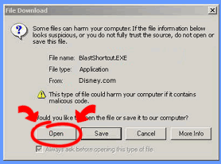

By installing the desktop shortcut, you will be placing an icon on your desktop. This shortcut works like a Web browser bookmark. Once it's installed, just click on it and you'll be taken directly to Disney's Blast.
Click the "Yes" button to download the desktop shortcut. A download dialog box will appear. Click "open" to run the installation from the Internet. The installer will automatically run and place the shortcut on your desktop.
And that's it! The next time you want to visit Disney's Blast, just click the desktop shortcut, and you'll be taken to all the excitement.
| 
|
|